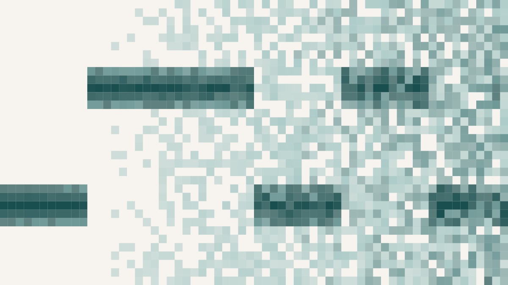

Can a Computer Leak Secrets Through Its Fan?
The most secure computer is one that is not connected to anything. Unplug it from every network, wired and wireless, and you have an air-gapped machine: whatever secrets it holds cannot be siphoned out over the internet, because there is no internet to siphon them over. This is how genuinely sensitive systems are protected — in defence, in finance, in critical infrastructure. The catch, and it is the whole subject of a small project I worked on with a student, is that an air gap is a wall built against one kind of threat. It stops data from leaving over the network. It does nothing about data leaving through the air.
The trick that makes this concrete is almost comic in its simplicity. Suppose malware has already made it onto the isolated machine — carried in on a USB stick, say. It can read the secrets, but it has no network to send them over and, on many secure builds, no speaker to play them out loud. What it does have is a cooling fan, and it can change the fan's speed. A fan spinning faster makes a higher-pitched sound than a fan spinning slowly. So run the fan at one speed to mean zero and a faster speed to mean one, and you have turned a cooling component into a transmitter, spelling out a message in pitches. A microphone nearby — a phone left casually on the desk — records the hum, and software on the far end reads the pitches back into bits. This is the Fansmitter technique, and the point of the replication was to build it from ordinary parts and see how well it actually works.
The build was as everyday as possible. A consumer fan-control app drove a single GPU fan between two duty settings, twenty-five and a hundred per cent, which produced two distinguishable low tones — around forty-seven hertz for a zero and seventy for a one. A phone running a physics-teaching app recorded the audio and exported its running spectrum. Because fans are heavy and slow to change speed, each bit had to be held for a full five seconds, which fixes the transmission rate at a glacial tenth of a bit per second or so — enough for a password over a couple of minutes, and not much more. Six-bit messages were sent at distances from twenty to fifty centimetres, in a normal, noisy shared room, and a decoding script tried to recover them from the recorded pitches, searching over the timing because a hand-triggered fan never switches exactly on the beat.
Up close, it works. At twenty centimetres the two tones sit in clearly separated bands and the six-bit patterns come back correctly. But move the microphone away and let the ordinary noise of a room compete, and the channel starts to come apart: the pitch tracker wanders off onto harmonics and stray peaks, the two bands blur into each other, and beyond short range the message can no longer be recovered with any consistency.
How the channel fails matters as much as that it fails. Two error measures rise as the microphone retreats: the hard binary error — was the bit right or wrong — and a softer score that asks how close the evidence came to the correct answer. The soft error runs consistently below the binary error, which means the channel does not snap off. It fades. Even where full bit recovery breaks down, the signal still leans the right way.
The most interesting result is hiding in the gap between those two curves, and it is worth being careful about. Every recovered bit was scored two ways. The blunt way is binary: for each of the six windows the decoder takes a vote — what fraction of the pitch samples in that window sit in the high band rather than the low — and calls the bit a one if the vote crosses a half, a zero otherwise. Get it wrong and that is a whole bit of error. The gentler way keeps the vote itself: a window where seventy per cent of the samples pointed the right way is scored as nearly correct even if some noise nudged the final tally; a window that was confidently, badly wrong is penalised hard. Across the distances, this soft error came out consistently below the binary error. The reading is that when a bit flipped, it usually flipped narrowly — the evidence was sitting near the boundary, not pointing firmly the wrong way. The channel does not have a clean cliff past which nothing gets through. It degrades gradually, and structure lingers in the signal even after the last cleanly decoded bit.
That distinction is exactly what makes this kind of channel awkward to defend against, and the study's own countermeasure follows from it. If the channel died abruptly at some range, you could relax anywhere past it. Because it fades instead, a defence that only pushes the decoder's success rate down still leaves recoverable structure behind for a more patient attacker. The clarity of the signal itself has to be attacked. The fix the paper proposes is neat precisely because it is so cheap: have the operating system inject small, random jitter into the fan's speed and timing — a bit of wobble on the duty cycle, a little irregularity in when it changes. To a person the fan just sounds like a fan. To the covert channel it is poison, because the two carefully separated tones smear together and the transmitter can no longer keep time with the receiver. No new hardware, no locked room; you simply make the fan a worse liar.
I want to be careful not to oversell what was built. In this form the channel is slow to the point of absurdity, works only across a desk, is thrown by the ordinary noise of a room, and can be given away by the very fan-revving it depends on — a lab demonstration far more than a practical weapon. But the principle underneath it is not fragile at all, and that is the part worth keeping. An air gap is a wall raised against the network, and the fan is a reminder that a wall only stops what it was built to stop. Any component that can be driven at two distinguishable rates — a fan, a disk, a power supply, a screen's brightness — is a component that can be made to talk, in a medium nobody thought to guard. The secret does not have to escape the way you were watching for.
An honest caveat that should go before any stronger claim
This was a feasibility replication on a single ordinary desktop, not a demonstration of a deployable attack. One controllable fan, one machine, one session, sixteen short runs in a single straight line at four distances, in an uncontrolled and genuinely noisy room, with the fan triggered by hand — which is why the decoder had to search over the timing at all. The error-versus-distance behaviour should be read as the shape of a trend rather than a benchmark: the numbers would move with a different fan, a different room, or a better receiver, and the study makes no claim otherwise. The proposed jitter countermeasure is argued for but not itself tested here. What the work honestly establishes is narrow and, I think, sufficient: an everyday machine with no speaker and no network can be made to emit a decodable acoustic signal from its cooling fan at close range, that signal degrades gracefully rather than cliffing as conditions worsen, and the cheapest place to break it is the clarity of the sound, not the cleverness of the decoder.